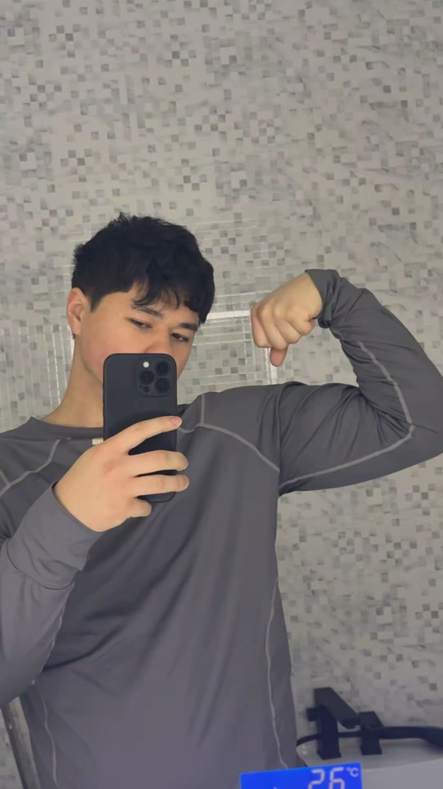
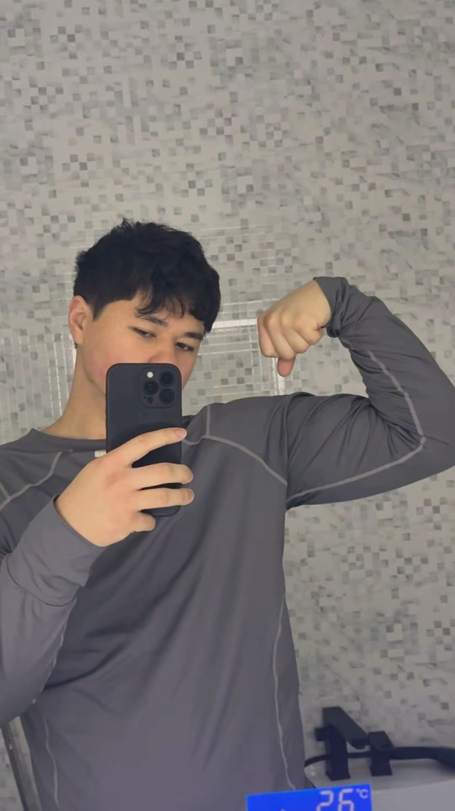
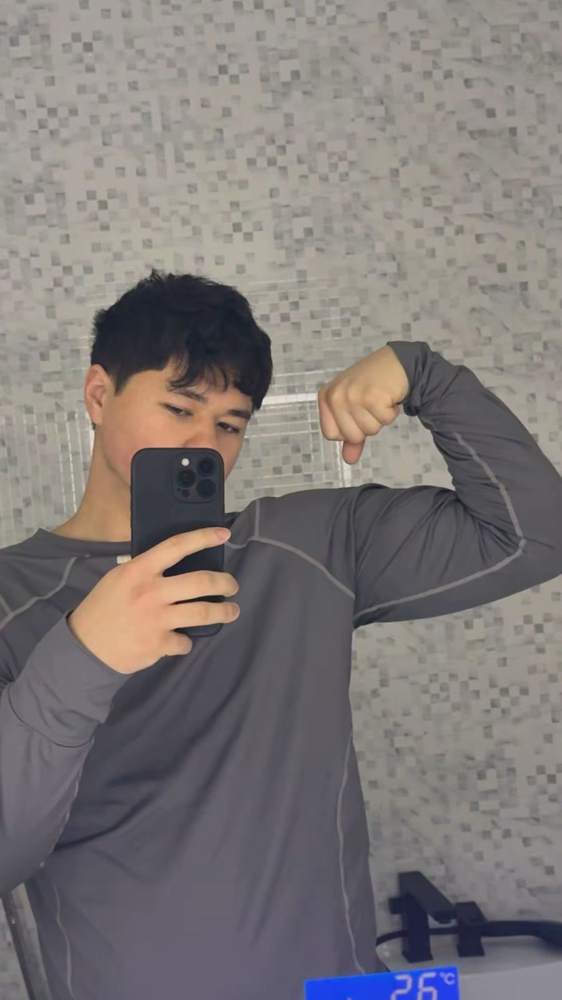

Галерея достижений
.jpg)
.jpg)
.jpg)
.jpg) 

.jpg)
.jpg)
Мне 18 лет, я студент колледжа МАБ (г. Алматы). Спортсмен, зам старосты группы '31 ПО', активист и будущий IT-специалист. Превращаю код в решения, а идеи — в реальные проекты.
Проектов
Спортсмен
В IT
Отдача
Настоящим подтверждается, что
Ковалёв Станислав Александрович
2007 г.р.
успешно освоил профессиональные навыки в области разработки ПО и системного администрирования.
Награждается
Ковалёв Станислав Александрович
2007 г.р.
за активное участие в жизни колледжа и высокие показатели в учебной деятельности.
Благодарится
Ковалёв Станислав Александрович
2007 г.р.
за волю к победе, лидерские качества и умение совмещать спорт с IT-образованием.
Ответственный, дисциплинированный, нацеленный на результат. Коммуникабелен, легко нахожу общий язык с людьми. Проявляю лидерские качества, сохраняю спокойствие в стрессовых ситуациях.
Бокс, ММА, самбо, каратэ, борьба, айкидо, кикбоксинг, джиу-джитсу, муай-тай, плавание, тренажёрный зал. Участие в спортивных событиях колледжа.
Высокая успеваемость. Инвентаризация оборудования, разработка рабочей среды, функции системного администратора. Участие в реальных рабочих процессах.
Windows Server, Linux, Web-dev, Python (Telegram-боты), SMM, кибербезопасность, автоматизация процессов.
Разработка на Python (SQLite/JSON). Реализация ролей пользователей, истории запросов и автоматизация ответов.
Сайты с личными кабинетами, лентами новостей. Проработка UX/UI и адаптивной верстки.
Анализ онлайн-платформ, выявление слабых мест и формирование предложений по улучшению UX.
Настройка серверов Linux и Windows Server: пользователи, права, службы, сети.
Исследование уязвимостей, защита информационных систем, моделирование угроз.
Веб-инструменты для автоматизации учебных и организационных процессов колледжа.
